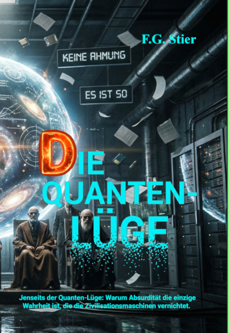

气泡室：轨迹的虚构
// 作为非局域因果之局域效应的航迹
在气泡室中，文明机器（ZM）的根本困境显露无遗：为了计算粒子动量，它将气泡痕迹视为经典的连续飞行轨迹。然而在理论上，ZM 清楚量子对象根本不具备飞行轨迹。
作为一名技术作者，我将文字不可比拟的诱惑力用作造像机器。本项目旨在作为 F.G. Stier 科幻小说虚构背景下，对“无”、“存在”与“代码”概念的哲学分析与文学解构。它用于为无时间因果律这一科学哲学概念奠定逻辑根基。
01. 二重性故障：操作实践 vs 量子理论
文明机器将其自身的物理学分裂为两个不可调和的范式，以解释气泡室实验：
| 视角 | ZM 主张 | 因果矛盾 |
|---|---|---|
| 1. 操作性认可（工程） | 凝结痕迹被视为飞行动作粒子的经典轨迹。 | 通过磁场曲率计算动量所必需。虚构了一个局域化的粒子。 |
| 2. 量子性认可（理论） | 量子对象是非局域的；位置和时间并非单次测量可观测量。 | 波函数本应扩散，却生成了清晰的、宏观局域化的痕迹。 |
“气泡室中的轨迹，是非局域因果在局域产生的效应。”
02. 作用链的 NPI 解构
左（ZM 幻觉）： 对连续飞行的微粒轨迹进行插值。
右（NPI 现实）： 过热气体中离散且被激活的 NPI 节点地址的快速序列。
左： ZM 追溯性地虚拟重构过去的轨迹。
右： NPI 作用链由起点和显现点在瞬间且无时间地逻辑强制形成。
03. NPI 公理系：奠定无时间因果律
对于 NPI 而言，不存在飞行的轨迹。气泡室中的痕迹是由 NPI 点阵的结构化作用链所生成的离散事件的无时间总和。
没有飞行的粒子发生碰撞；NPI 点阵依次激活介质中的 NPI 节点。
ZM 的光学系统将离散的点插值为一条连续的轨迹。
显现点瞬间决定了此前所有地址的完整作用顺序。
// 出版物与已出版作品

无时间因果律的原理
奠定无时间因果律的科学哲学概念及 NPI 公理。

量子谎言
对显示屏背后人类孤立状态的文学分析，以及对机器智能的解构。